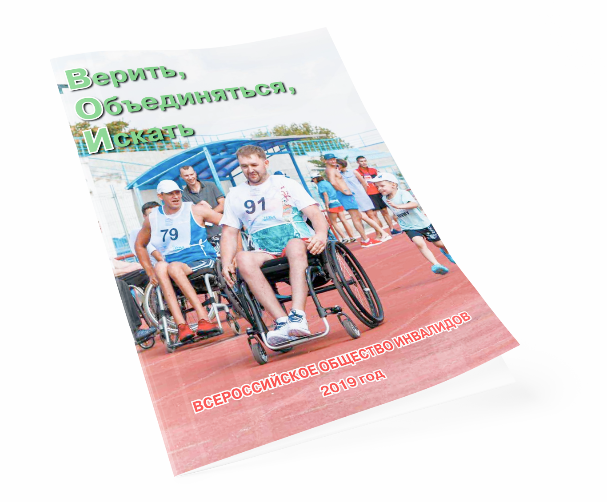

<section class="wrapper-content wrapper-content--overview">
  <div class="container">
    <div class="overview">
      <div class="events-posts events-posts--overview">
        <div class="events-posts__item events-post events-post--overview">
          <div class="events-post__img">
            
          </div>
          <div class="events-post__info">
            <h2 class="events-post__info-title title-lg tt-upercase beffore-line beffore-line--out-container">
              Ежегодный обзор деятельности ВОИ
            </h2>
            
            <h3 class="events-post__title title-md color-main">
              Всероссийское общество инвалидов. 2019 год
            </h3>
            <p class="events-post__txt text-md color-light">
              Событием года стала генеральная ассамблея Международной неправительственной организации Rehabilitation International (RI), прошедшая в Москве. Всероссийское общество инвалидов впервые стало организатором всемирного форума организаций, которые отстаивают права и интересы людей с инвалидностью. 
            </p>
            <a href="./img/overview/1.png" class="events-post__btn-download btn btn-md btn-white" download>
              Скачать обзор в формате PDF
            </a>
          </div>
        </div>
      </div>
    </div>
  </div>
</section>